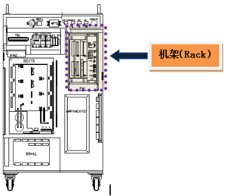

该错误时在从主板向伺服板发送马达ON指令但伺服没有启动马达时发生。
同时，主板与伺服板之间的通讯有问题时也会发生此错误。
在主板向伺服板发送马达ON指令之前，发送清除（Clear）伺服错误的指令，其伺服错误被清除后再发送马达ON 指令。如果伺服错误未被清除，该伺服错误就会再次出现，从而不能输出马达ON指令。因此，只要不是属于主板与伺服板之间的通讯问题，就会正常启动马达或发生其它伺服错误。
|
1. 请检查主板与伺服板是否正常安装。 n 请检查基板是否正确安装。 n 请检查基板是否有异常。 |
(1) 请检查主板与伺服基板是否正确安装。
若主板与伺服板安装不正常或基板有异常问题，可能出现通讯问题，从而发生错误。
1. 请检查基板是否正确安装。
请从机架中拆除主板与伺服板后重新安装。

图 5.63 控制器内部机架位置
2. 请检查基板是否有异常。
为了正确判断基板的异常与否，请更换基板。